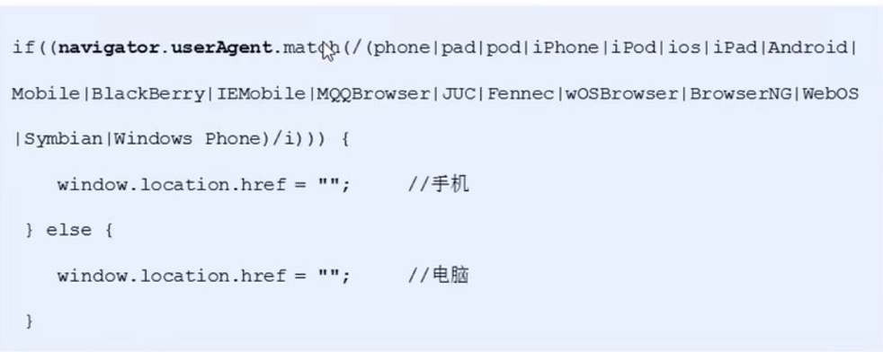

BOM 浏览器对象模型
1. BOM概述
BOM（Browser Object Model，浏览器对象模型），它提供了独立于内容与浏览器窗口进行交互的对象，把浏览器当作一个对象看待，
核心对象是window，window既是JS访问浏览器窗口的一个接口，也是一个全局对象，window下有一个特殊属性window.name，所以我们给变量起名时避开name
2. window对象的常见事件
2.1 窗口加载事件
有了onload事件就可以把JS写到元素的上方
- window.onload = function() { };当文档内容完全加载完成才会触发该事件（包括图像，脚本文件，CSS文件等）只能写一次
- window.addEventListener('load', function() { });当文档内容完全加载完成才会触发该事件（包括图像，脚本文件，CSS文件等）可以写多次
- window.addEventListener('DOMContentLoad', function() { });DOMContentLoad事件只需DOM加载完时就完成（不包括图像，脚本文件，CSS文件等）IE9+支持，可以写多次
2.2 调整窗口大小事件
window.onresize是调整窗口大小事件，当窗口大小发生变化就调用处理函数，通常用来完成响应式布局window.innerWidth
- window.onresize = function() { };
- window.addEventListener('resize', function() { });
3. 定时器
3.1 window.setTimeout(回调函数, 延迟的毫秒数)
- window可以省略
- 这个回调函数可以直接写函数，或者先声明函数再写函数名，或者声明函数后采取‘函数名()’三种形式
- 延迟的毫秒数省略默认是0，如果写必须是毫秒数，表示延迟多少毫秒自动调用回调函数
- 因为定时器可能有很多，所以经常给定时器一个名字用来区分多个定时器
- window.clearTimeout(timeoutId)，取消之前通过setTimeout()建立的定时器，window可以省略
3.2 window.setInterval(回调函数, 间隔的毫秒数)定时器
setInterval()方法每隔一段时间调用一次回调函数
- window可以省略
- 这个回调函数可以直接写函数，或者先声明函数再写函数名，或者声明函数后采取‘函数名()’三种形式
- 间隔的毫秒数省略默认是0，如果写必须是毫秒数，表示每隔多少毫秒自动调用回调函数
- 因为定时器可能有很多，所以经常给定时器一个名字用来区分多个定时器
- window.clearTimeout(intervalId)，取消之前通过setInterval()建立的定时器，window可以省略
4. JS执行队列
JS的一大特点就是单线程，即同一时间只能做一件事，所有的任务都需要排队，可能导致页面加载阻塞，为了解决这个问题于是JS中出现了同步和异步
- 同步任务：在主线程上执行，形成一个执行栈
- 异步任务：添加到任务队列（消息队列）中，通过回调函数实现，异步任务有以下三种类型：
①普通事件：click,resize等
①资源加载：load，error等
①定时器：setInterval,setTimeout
JS的执行机制：
- 先执行主线程（执行栈）中的同步任务
- 异步任务放到任务队列中
- 一旦执行栈中的所有同步任务执行完毕，系统就按照顺序读取任务队列中的异步任务进入执行栈进行执行，重复该动作
事件循环：由于主线程不断的重复获得任务，执行任务，再获取任务，再执行所以这种机制被称为事件循环
5. location对象
window的location对象用于获取或设置窗体的URL，并且可以用于解析URL
5.1 URL 统一资源定位符
URL的一般语法为：protocol://host:port/path?query#fragment
- protocol 通信协议，常用的http,ftp,maito等
- 主机（域名）
- port 端口号，可以省略默认80端口
- path 路径，主机上的一个目录或文件地址
- query 参数，以键值对的形式通过“&”隔开
- fragment 片段，#后面内容常见于锚点链接
5.2 location对象的属性
- location.href 返回或设置整个URL
- location.host 返回主机（域名）
- location.port 返回端口号，如果未写返回空字符串
- location.pathname 返回路径
- location.search 返回参数
- location.hash 返回片段
参数的提取:
- 利用str.substr(1)去掉?；
- 创建一个对象obj；
- 利用str.split('&')分割每个属性成为数组strs；
- 开始循环，利用str.split('=')并将其设为之前创建的对象的属性，obj[strs[i].split("=")[0]]=unescape(strs[i].split("=")[1]);
5.3 location对象的方法
- location.assign() 跟href一样，可以跳转页面（重定向）
- location.replace() 替换当前页面不记录历史，所以不能后退页面
- location.reload() 重新加载页面，相当于刷新按钮或f5，如果参数为true强制刷新
6. navigator对象
navigator对象包含浏览器相关信息，包含很多属性，最常用的是userAgent，该属性返回由客户机发送服务器的user-agent头部值，由此判断是用什么设备打开的浏览器

7. history对象
history对象与浏览器历史记录进行交互，该对象包含用户在浏览器窗口中访问过的URL
- history.back() 后退
- history.forward() 前进
- history.go(参数) 前进后退功能，参数为正表示前进，为负表示后退